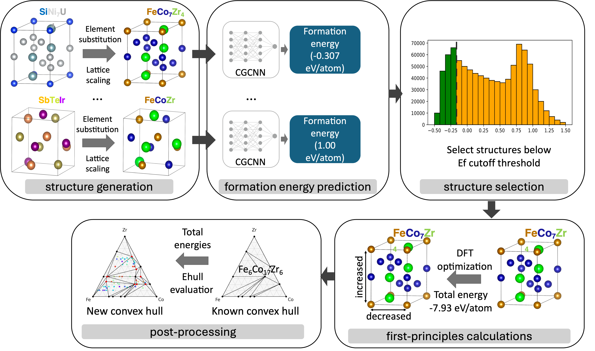
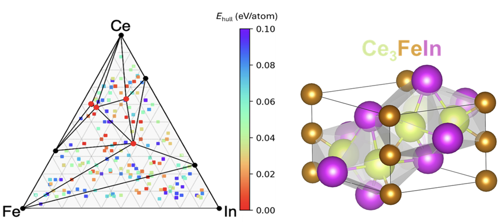

Thrust 1 | exa-AMD
AI/ML-assisted materials discovery and design
exa-AMD is a Python workflow framework that integrates materials databases, CGCNN and other ML models, MLIP relaxation, adaptive genetic algorithms, DFT validation, and convex-hull analysis through Parsl. The goal is rapid exploration of ternary, quaternary, and higher-order composition-structure spaces.
Overview workflow
The exa-AMD workflow starts from prototype structures and composition substitutions, uses machine learning to prioritize promising candidates, validates selected structures with first-principles calculations, and closes the loop with convex-hull and stability analysis.
- Module I: scalable ML screening. Generate prototype-derived candidate structures, predict formation energies with CGCNN, select low-energy structures, and send candidates through DFT validation and convex-hull post-processing.
- Module II: MLIP relaxation and hull sorting. Insert machine-learning interatomic-potential relaxation before DFT to accelerate local relaxation, candidate ranking, and preparation of high-value structures for first-principles calculations.
- Module III: AGA + MLIP structure search. Use adaptive genetic algorithms with GPU-ready MLIP relaxation to predict new structure types from chemical composition alone, then feed promising results back into DFT and ML refinement.

Research progress
The framework is ready for applications to search for ternary compounds. The speedup of the framework scales almost linearly with the number of GPUs. For any ternary system with three chemical elements, it produces a map of comprehensive composition-structure-energy landscape in just a few hours. About 1000 candidate structures were selected from CGCNN for first-principles calculations. Using 32 GPUs on Perlmutter at NERSC, the energy calculations completed in about 3-4 hours. For most ternary systems, about 2000 candidate structures per system will be selected for DFT calculations, which can complete within a few hours using 64 GPUs. The framework can also perform searches for many ternary systems simultaneously, scaling to several thousand GPUs when sufficient resources are available.

